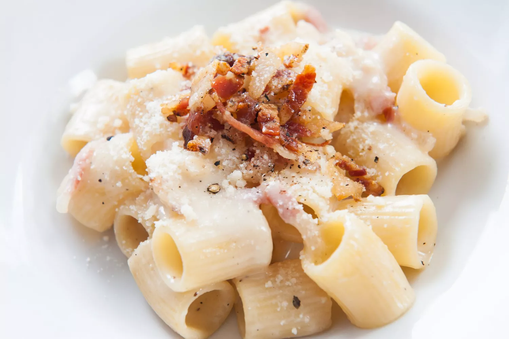

Gricia

The Sleeper: Gricia
For some reason, pasta alla gricia just hasn't taken off in the U.S. the way that cacio e pepe or carbonara have.
This is absolutely baffling to me! Cacio e pepe is excellent for vegetarians or during lunch breaks when you only have enough time to boil water — but with the addition of guanciale, cacio e pepe turns into gricia, something even more magical. It seems unimaginable that the luxurious silkiness of cacio e pepe could be topped, but the emulsification of the guanciale fat into the sauce takes it to another level entirely. Gricia exists in the liminal space between cacio e pepe and carbonara, but is the (delicious) bridge between the two. And as you'll see, gricia is the pasta that walks to allow amatriciana to run.
Ingredients
- 8 ounces dried pasta
- 6 ounces guanciale, diced
- 1 ounce Parmesan cheese (plus more for serving), grated
- 1 ounce Pecorino-Romano cheese, grated
- Freshly cracked black pepper, to taste
Steps
- Boil pasta in a pot of heavily salted water for about 2 minutes less than the package directions recommend.
- Add the diced guanciale to a large skillet and place the pan over medium-low heat. Saute until the fat has rendered and the guanciale is crisp.
- Meanwhile, in a small mixing bowl, add both cheeses, a generous amount of black pepper, and a splash of cold water; mix vigorously to form a paste.
- Drain pasta, reserving about 2 cups of pasta water.
- Add drained pasta to the pan with the guanciale and toss a few times to coat in the fat. Pour in about 1 cup of pasta water and toss. Dollop the cheese paste around in the pan. Mix vigorously to create a smooth sauce, adding in more pasta water as needed to achieve desired consistency.
- Taste, adjust seasoning, and serve topped with more Parmesan.